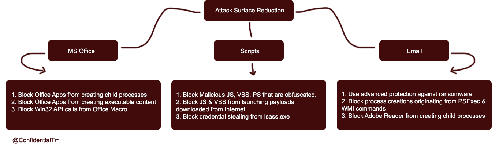

WDEG - Bypassing ASR
في هذي المقالة راح يتم شرح عن المفهوم الرئيسي وشرح احد العناصر مع احد التخطيات لها.
What is Windows Defender Exploit Guard?
هو عبارة عن software كجزء من Windows Defender Security Center والذي بدوره يقوم بحماية انظمة تشغيل ويندوز من ال malware ومن عدة هجمات على المستخدم
WDEG Components:
حماية الشبكة - يحظر التهديدات التي تؤدي إلى إنشاء اتصال خارجي او IPS غير موثوق بها.
التحكم في وصول إلى مجلد ما - يمنع العمليات غير الموثوق بها من الوصول إلى المجلدات المرقابة / المحمية.
الحماية من الاستغلال - لتطبيق إعدادات التخفيف على مستوى النظام مثل DEP و ASLR و CFG وما إلى ذلك.
تم تركيزنا على احد عناصر الـ WDEG وهو Attack Surface Reduction.
كما ذكرنا سابقا ً، ان الـ ASR يُعطل الهجمات المستخدمة بشكل شائع:

وهذه أمثلة على قواعد الـ ASR:
- Block executable content from email client and webmail
- Block all Office applications from creating child processes
- Block Office applications from creating executable content
- Block Office applications from injecting code into other processes
- Block JavaScript or VBScript from launching downloaded executable content
- Block execution of potentially obfuscated scripts
- Block Win32 API calls from Office macro
- Block executable files from running unless they meet a prevalence, age, or trusted list criterion
- Use advanced protection against ransomware
- Block credential stealing from the Windows local security authority subsystem (lsass.exe)
- Block process creations originating from PSExec and WMI commands
- Block untrusted and unsigned processes that run from USB
- Block Office communication application from creating child processes
- Block Adobe Reader from creating child processes
[HKEY_LOCAL_MACHINE\SOFTWARE\Policies\Microsoft\WindowsDefender\Windows Defender Exploit Guard\ASR\Rules]
"56a863a9-875e-4185-98a7-b882c64b5ce5"="Block abuse of exploited vulnerable signed drivers"
"7674ba52-37eb-4a4f-a9a1-f0f9a1619a2c"="Block Adobe Reader from creating child processes"
"D4F940AB-401B-4EFC-AADC-AD5F3C50688A"="Block all Office applications from creating child processes"
"9e6c4e1f-7d60-472f-ba1a-a39ef669e4b2"="Block credential stealing from the Windows local security authority subsystem (lsass.exe)"
"BE9BA2D9-53EA-4CDC-84E5-9B1EEEE46550"="Block executable content from email client and webmail"
"01443614-cd74-433a-b99e-2ecdc07bfc25"="Block executable files from running unless they meet a prevalence, age, or trusted list criterion"
"5BEB7EFE-FD9A-4556-801D-275E5FFC04CC"="Block execution of potentially obfuscated scripts"
"3B576869-A4EC-4529-8536-B80A7769E899"="Block Office applications from creating executable content"
"75668C1F-73B5-4CF0-BB93-3ECF5CB7CC84"="Block Office applications from injecting code into other processes"
"26190899-1602-49e8-8b27-eb1d0a1ce869"="Block Office communication application from creating child processes"
"d1e49aac-8f56-4280-b9ba-993a6d77406c"="Block process creations originating from PSExec and WMI commands"
"b2b3f03d-6a65-4f7b-a9c7-1c7ef74a9ba4"="Block untrusted and unsigned processes that run from USB"
"92E97FA1-2EDF-4476-BDD6-9DD0B4DDDC7B"="Block Win32 API calls from Office macros"
"D3E037E1-3EB8-44C8-A917-57927947596D"="Block JavaScript or VBScript from launching downloaded executable content"
"e6db77e5-3df2-4cf1-b95a-636979351e5b"="Block persistence through WMI event subscription"
"c1db55ab-c21a-4637-bb3f-a12568109d35"="Use advanced protection against ransomware"
What is the meaning of this rule?
التعريف الحرفي هو حظر JavaScript or VBScript من تشغيل المحتوى القابل للتنفيذ الذي تم تنزيله, بمعنى انه بالأمكان استخدام نصوص JavaScript or VBScript بواسطة أحد الـ malware لتشغيل malicious apps.
مع العلم بأن الـ ASR لن يحظر أو يراجع اي طرق تنفيذ اعتياديه بنفسه لكن عند قيام السكربت بتنفيذ request VBScript/Jscript يقوم الـ ASR بوظيفته.
بأمكانك تكوين وأعداد قاعدة ASR لحظر اي تهديد من خلال الـ GUIDs وتحديد الاجراء المراد عن طريق هذا الامر:
Add-MpPreference -AttackSurfaceReductionRules_Ids D3E037E1-3EB8-44C8-A917-57927947596D -AttackSurfaceReductionRules_Actions Enabled
Demo